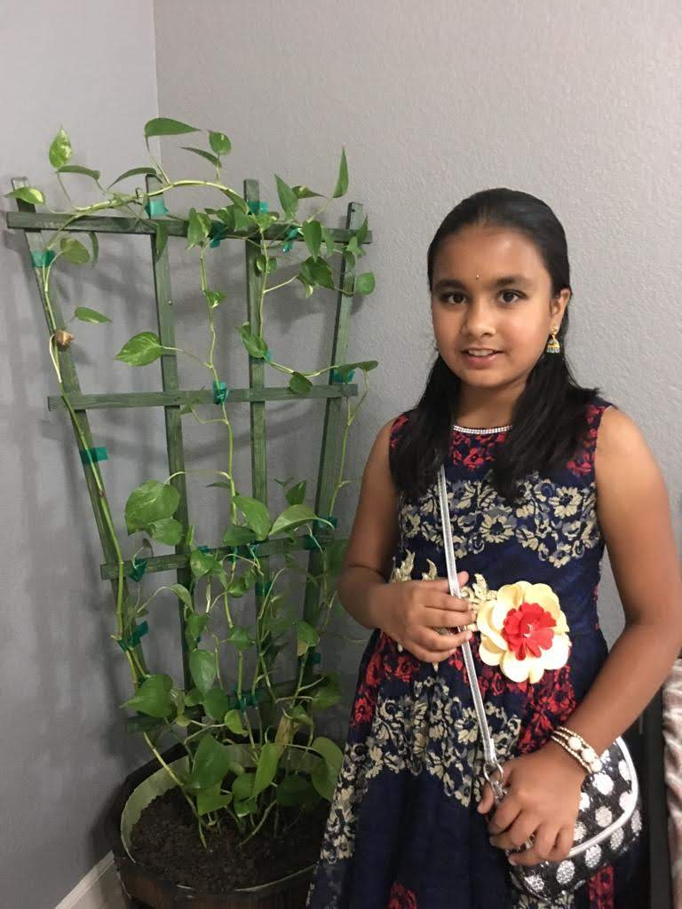
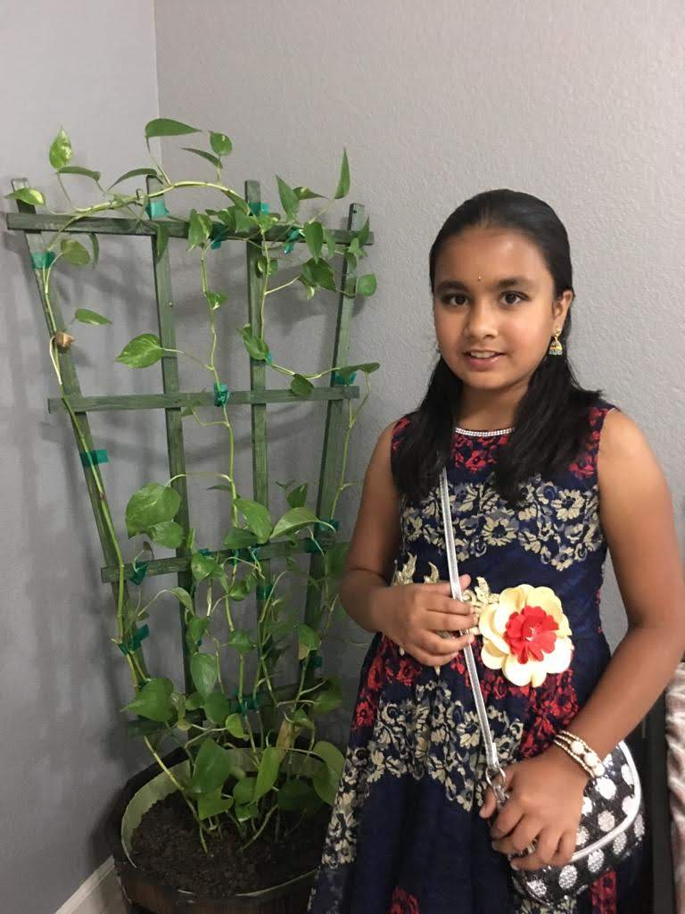

Hi! My name is Siddhi. I am a fifth grader a
Sebastian Questa Elementary
School
My favorite subject is math. I like decimals and fractions.
They sound hard at first, but the are easy. I like swiming. My hobbies are programing, robotics,
blogging. Here is my blog My
blog I am a gate ( Gifted and Talented Education) student. My favorite animal is a dog and cat.
I want to be a doctor when I grow up.
In third grade I won the science fair. I got the highest test Score out my whole class in fifth grade
for math. If you didn't
know I have a fish tank and fishies to see them check out my "fish tank" page.
Here are some pics of me ...
 
